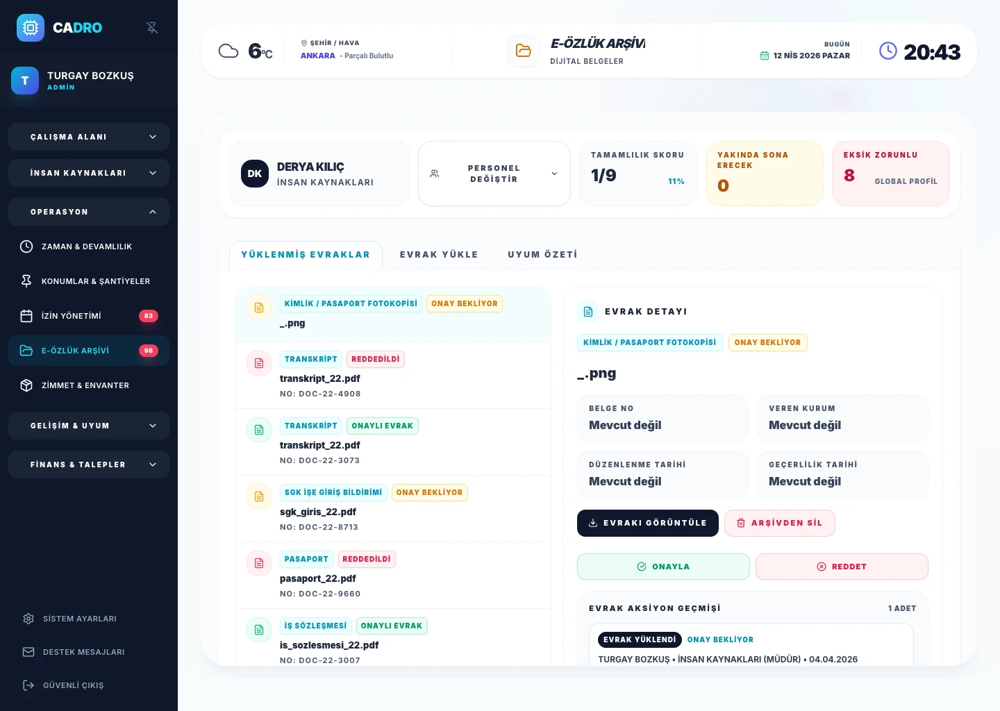
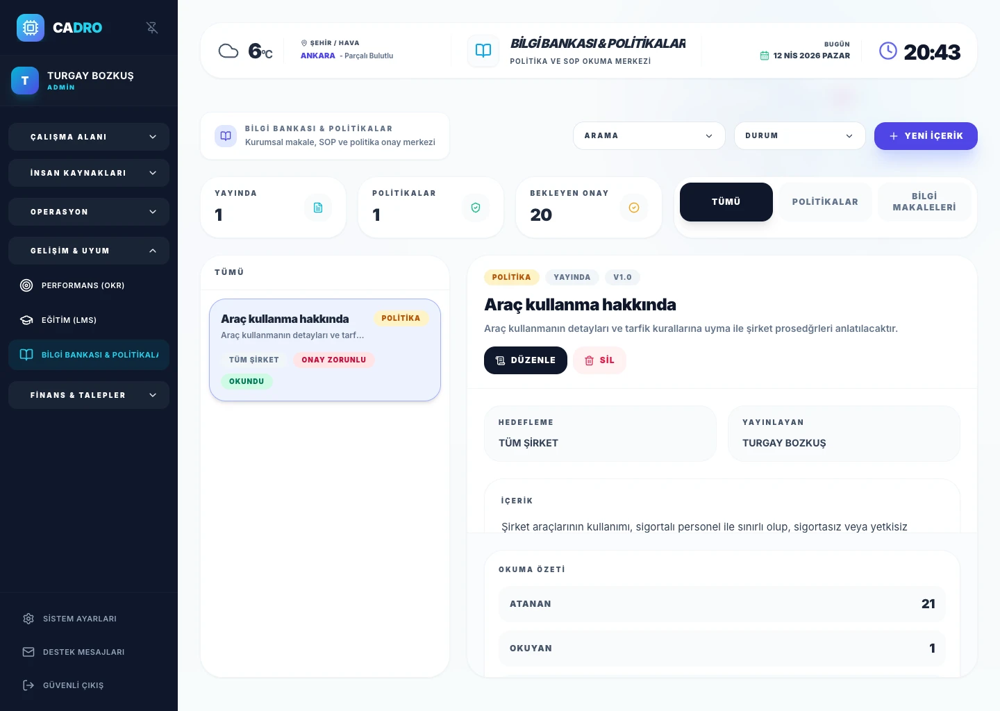

متابعة ملفات الموظفين الرقمية
اطّلع سريعاً على وثائق الموظفين الناقصة أو المعلّقة أو منتهية الصلاحية، وحدّد الإجراءات المطلوبة.

إجراءات الامتثال وحوكمة الموارد البشرية
يساعد CADRO على إدماج إجراءات الامتثال في سير العمل اليومي من خلال ملفات الموظفين الرقمية وإقرارات الاطلاع على السياسات وقواعد الاحتفاظ بالبيانات وسجل تدقيق قابل للمراجعة. ولا يُعدّ استخدامه بحد ذاته ضماناً للامتثال القانوني؛ إذ يلزم تقييم المتطلبات المطبّقة على مؤسستك مع المختصين.

قد تؤدي الوثائق الناقصة والسياسات القديمة وضعف المتابعة إلى مخاطر تشغيلية أثناء عمليات التدقيق.
تقلّ وضوح الرؤية وتزداد صعوبة متابعة الإجراءات عند إدارة متطلبات الامتثال عبر البريد الإلكتروني والمجلدات المتفرقة.
يجمع النظام متابعة الوثائق ونشر السياسات وتتبع الإجراءات في مكان واحد.
دعم إجراءات الامتثال
اطّلع سريعاً على وثائق الموظفين الناقصة أو المعلّقة أو منتهية الصلاحية، وحدّد الإجراءات المطلوبة.
وزّع السياسات حسب الجمهور المستهدف، وأعدّ تقارير عن القراءة والإقرار بالاطلاع.
اجعل إجراءات معالجة البيانات والاحتفاظ بها وحذفها أكثر اتساقاً وقابلية للتتبع.
سير عمل الإقرار بالاطلاع على السياسات
انشر سياسات المؤسسة حسب الدور أو القسم أو على مستوى الشركة، ثم تابع بوضوح من قرأها ومن لا يزال مطالباً باتخاذ إجراء.
استعرض وحدة قاعدة المعرفة ←
الأسئلة الشائعة
نعم. يلخّص النظام الوثائق الناقصة أو المعلّقة أو منتهية الصلاحية، ويُبرز السجلات التي تتطلب اتخاذ إجراء.
نعم. يمكن إدارة تحديد الجمهور المستهدف وإصدارات السياسات والمقالات المعرفية وتتبع إقرارات الاطلاع عليها ضمن إطار واحد.
هل أنت مستعد؟